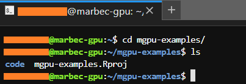
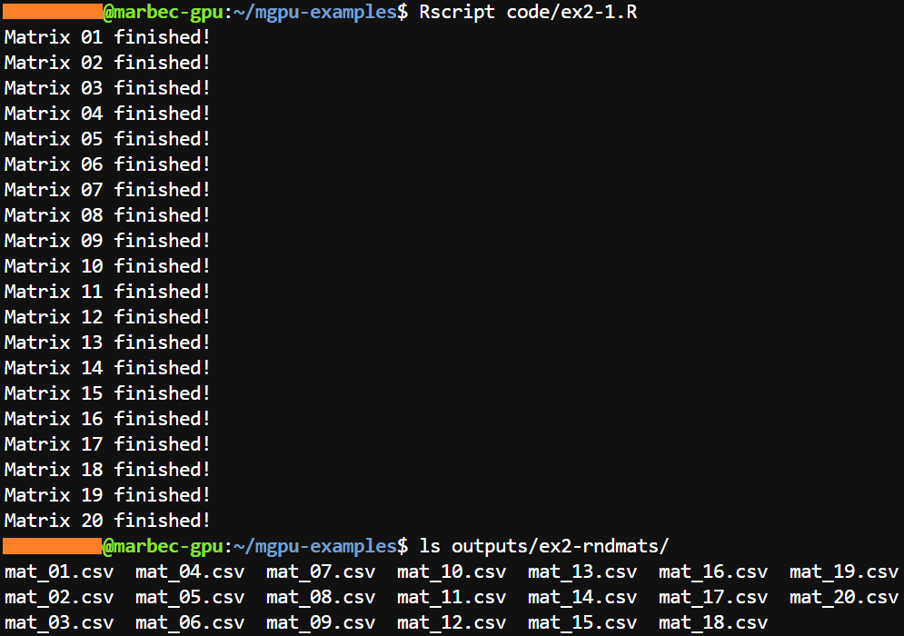
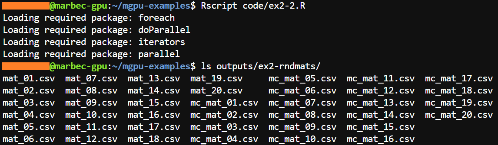

print("Hello world and hello marbec-gpu!")Running an R script into marbec-gpu
Running R scripts in marbec-gpu.

Image credits: Андрей Сизов at Unplash
Let’s working with marbec-gpu
Let’s tidy up a bit
Creating a working directory
As when working with RStudio locally (i.e. on our PC), it is recommended to clearly define our working directory. This is extremely important because any process we run (either from RStudio or Terminal) will use that directory as a reference to find input files, output files or even other scripts.
For our case, we have created a folder called mgpu-examples/ where there is a subfolder called code/. The creation of folders in marbec-data can be done directly from the web interface (by clicking on File station and then using the Create folder button), the command mkdir, but we can also copy-paste the elements already existing in our PC into the working folder.
Creating an RStudio project
The following is NOT mandatory, but very useful, especially when working with RStudio and that is to create an RStudio project. To do this, we will go to File and then New Project.

Then, in the window that appears, click on Existing directory, then on Browse and click on the folder that we have defined as our working directory (in our case, mgpu-examples/). Then, OK and finally click on the Create Project button. Rstudio will flicker a little bit and then will show us the same window, but inside the set project. The easiest way to check that the project has been created in the correct folder (mgpu-examples/ in our case) is to verify that right in the Console panel, to the right of the R version, appears only the path of our main folder (and not any of the subfolders, e.g. mgpu-examples/code/ or mgpu-examples/inputs/).

Just before to say
hello
marbec-gpu incorporates the possibility of working with RStudio (Server); however, this interface should be used ONLY to PREPARE our scripts before being executed using all the power of our server. In other words, within the RStudio environment we will be able to load not so big files and perform basic operations, but at no time should we execute a complex (heavy) process from there, but from Terminal.
Hello world! (simple examples)
Example 1-1
We will start with the simplest: create a script in R and print the (very famous) “Hello world!” message.
We will start by opening an RStudio session from the JupyterLab environment (if you want to know how to get there, check the post of Introduction to
marbec-gpu).Once inside the RStudio environment, we will create a new script (File -> New file -> R script) which will contain a single line:
Then, we will save that script with the name code/ex1-1.R (code/ refers to a subfolder created previously inside the working directory of our project in RStudio).
Now comes the interesting part, inside our browser, we must go back to the Launcher tab and open a Terminal window (clicking on the corresponding icon).
By default, Terminal will open a session in the local folder assigned to our user. From there, we must get to the folder we have set as working directory; that is, the folder that our script will recognize as working directory (whether we have decided to use RStudio or not to create it or create a project inside it). Assuming that our working directory is the
mgpu-examples/folder, we must reach it using thecdcommand:
cd mgpu-examples/
How do we know that we have arrived at the correct folder?
First, the prompt will indicate the name of the folder in which it is located.

In addition, we can run the ls command which will show the subfolders and files inside the folder we have reached. If everything matches, then we did well.

- Next, we execute the following command in the Terminal:
Rscript code/ex1-1.Rand the result should be just what would be shown in a usual R session.

Example 1-2
In this next example, we will show a script that generates and saves files in our working directory where previously, we will create two new folders (figures/ and outputs/) through the mkdir command as follows:
mkdir figures/ outputs/
Note
Within the Terminal environment, it is not possible to observe graphics interactively (as in RStudio), so if you want to keep any figure, you must always include the code to save it within the script you execute. Depending on the graphical environment, we can use functions such as png, bmp, jpeg, pdf (for graphics environment), or ggsave (for ggplot2 environment).
- Now, let’s go to RStudio to create the following script and save it in code/ex1-2.R:
# Print mtcars
print(mtcars)
# Export mtcars as a csv
write.csv(x = mtcars, file = "outputs/mtcars.csv")
# Create and save a scatterplot
png(filename = "figures/fig_1-1.png")
plot(x = mtcars$mpg, y = mtcars$disp,
xlab = "Miles per (US) gallon", ylab = "Displacement (cu.in.)")
dev.off()- Next, we go back to the Terminal environment and run our new script with the command
Rscript code/ex1-2.R. Immediately, themtcarstable will be displayed as that is what the first line of our script commands.

- However, if we run the
lscommand in Terminal for the figures/ and outputs/ folders, we will see that the two files we ordered to be created inside our script appear.

- If the files created are the ones we expect to collect from our analysis, we can download them through Filezilla (see the corresponding post).
Previewing figures
While it is not possible to preview figures in Terminal or JupyterLab because they do not have an image viewer, it is possible to do so from the marbec-data web environment. However, this is a basic viewer and only available for the most common file types.
Hello universe! (parallel process)
Example 2-1: A loop in a single core
- We will start by creating a script (which we will save as code/ex2-1.R) containing a simple loop that generates 20 100x100 arrays with random values and saves them in separate csv files inside the outputs/ex2-rndmats/ folder (remember to create that folder beforehand using
mkdir):
# Setting number of rows and columns
row_n <- 100
col_n <- 100
for(i in seq(20)){
# Create random matrix
rndMat <- matrix(data = runif(n = row_n*col_n), nrow = row_n, ncol = col_n)
# Save matrix
write.csv(x = rndMat,
file = sprintf(fmt = "outputs/ex2-rndmats/mat_%02d.csv", i),
row.names = FALSE)
# Print a message at the end of each step
cat(sprintf(fmt = "Matrix %02d finished!\n", i))
}- Now, we will run our script in Terminal (with the command
Rscript code/ex2-1.R) and we will observe that everything went well if the messages at the end of each step of the loop are displayed correctly and also if when we run the commandlson the target folder we see the files created:

Run a small example first
Being already in a real execution, it is highly recommended always to try with a small example that allows us to corroborate that our script goes well BEFORE to pull out all the stops trying to execute the heavy process. In addition, if our script returns figures or files, executing a small corroboration script allows us to quickly check if the generated files are consistent with what we expect to obtain.
Example 2-2: A loop on multiple cores
- Starting from the previous example, we will convert our script into one that executes the processes in parallel. For this we will take advantage of the tools of the packages foreach and doParallel. Note that the names of the files of this script will begin with the letters
mc_to be able to recognize them with respect to those obtained in the previous example:
# Setting number of rows and columns
row_n <- 100
col_n <- 100
require(foreach)
require(doParallel)
# Registering cluster
cl <- makeCluster(spec = 20)
registerDoParallel(cl = cl)
# Run multithread process
out <- foreach(i = seq(20), .inorder = FALSE) %dopar% {
# Create random matrix
rndMat <- matrix(data = runif(n = row_n*col_n), nrow = row_n, ncol = col_n)
# Save matrix
write.csv(x = rndMat,
file = sprintf(fmt = "outputs/ex2-rndmats/mc_mat_%02d.csv", i),
row.names = FALSE)
NULL
}
# Finish cluster
stopCluster(cl)- Now, we will run our script in Terminal (with the command
Rscript code/ex2-2.R) and we will observe that everything has gone well if when executing the commandlson the target folder we see the created files:

Note
A couple of things:
In the script of the second example,
foreachis assigned to an object (out) which will receive the last object generated within each step of the loop. If you only want to get files to be exported (figures, tables, NetCDF, etc.), be sure to leave aNULLin the last line of the loop. On the other hand, if you want to get an object and it is placed in that position,foreachwill compile it using thelistfunction, i.e. the final object (out) will be alistthat will have as many levels as there are steps in the loop. Also, it is important to note that internallyforeachruns a separate small R session so it is necessary to indicate the additional packages required through the.packagesargument (see the following example).The argument
spec = 20insidemakeClusterrefers to the amount of threads that will be used to execute the loop. Remember that one of the options when creating your server inmarbec-gpuwas to choose the amount of CPUs (2, 4, 8, 16, 32…)? Well, it is precisely with this argument where you will indicate that amount of logical cores. Remember that another important aspect is the RAM. At a given time each process running within each thread will have to load everything that a single simple process would need. In other words, if in a single core process, in each step of our loop we have to load 5 NetCDF files that occupy 5 GB in RAM, if we run that process in multicore and we definespec = 40, at a given moment we will have to load 5GBx40 (200 GB) in RAM simultaneously. So not only you must choose well the configuration of your server (regarding the script you plan to run), but also an approximate of what is consumed in each independent process, in order not to saturate your server.marbec-gpuis great, but it has its limits.